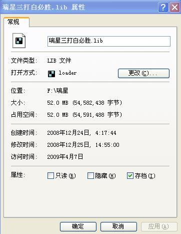

瑞星三打白16必胜问题
首页
五子棋交流
#1 瑞星三打白16必胜问题 作者：可乐可口 发表时间：2009-5-1 18:20:25
在岳麓小棋后的帖子里看到的，这个16后如何必胜？
=======上图对应的爱五子棋谱代码如下，以便你拆解：========
h8h9h6i10f8i9g9g8j11f10h10i11i12f11g10h11
======================================================
#2 Re:瑞星三打白16必胜问题 作者：逆刃 发表时间：2009-5-1 18:32:38
ShowPost.asp?ThreadID=5655
#3 Re:瑞星三打白16必胜问题 作者：茗弈如梦 发表时间：2009-5-1 18:35:15
=======上图对应的爱五子棋谱代码如下，以便你拆解：========
h8h9h6i10f8i9g9g8j11f10h10i11i12f11g10h11g12g13h13k10
======================================================这个16小刀地毯过,
#4 Re:瑞星三打白16必胜问题 作者：t周 发表时间：2009-5-1 19:11:58
=======上图对应的爱五子棋谱代码如下，以便你拆解：========
h8h9h6i10f8i9g9g8j11f10h10i11i12f11g10h11g12g13g11f12f13e10
======================================================
#5 Re:瑞星三打白16必胜问题 作者：可乐可口 发表时间：2009-5-1 21:03:13
逆刃的回答很能说明一个问题
很多变化，由于所谓的必胜、地毯，人们忽略了它，不去拆解它。
逆刃如果你看一下那个谱，就会发现这个分支到白18就结束了，根本没杀下来。
这里我引用一下屏蔽的一段话：
瑞星三打白必胜，这个结论是在前些年公布的。公布之初或即将公布之时，那套胜法也算一个机密了，知道的自然藏着掖着，背得滚瓜烂熟，不知道的只好干着急，拼命搜集相关定式，这导致后来一段时间里瑞星三打的知晓度越来越高，稍微有点水平的棋手人人都会了。但尘埃落定之后，定式公布，必胜不再神秘，关注程度自然也就随之下降，一个很严重的问题就是没有经历过那一段时期的棋手可能只是得到了个干巴巴的结论，由于在比赛中几乎绝迹，他/她也就不可能正式确认自己到底是否掌握了这个定式，最后的结果自然就是――没掌握。很多古老的定式都是这样在年青棋手中流失的，尽管那些定式就在某个.lib中静静躺着，却从未被翻看过，因为看起来是“没必要”的。
非常敬佩屏蔽，尤其是他曾提到的不借助软件帮助思考的精神，自己拆棋，才是学棋之正道
#6 Re:瑞星三打白16必胜问题 作者：游戏人间 发表时间：2009-5-1 21:10:38
 楼上说出了一个很重要的问题。。。呵呵。。其实有时候根据对手下棋的时间就能适当的选择变化了。。
楼上说出了一个很重要的问题。。。呵呵。。其实有时候根据对手下棋的时间就能适当的选择变化了。。
#7 Re:瑞星三打白16必胜问题 作者：学生刀 发表时间：2009-5-1 21:14:56
我没啥地毯谱（除了斜月一打次6和溪峡月，溪月刀1打，云月2打），都是毛巾 ，地毯谱把放片的位置给占了
#8 Re:瑞星三打白16必胜问题 作者：逆刃 发表时间：2009-5-1 21:15:36
呵呵，我没拆过瑞星三，那个谱没怎么看，所以不知道那个谱里面没有。
#9 Re:瑞星三打白16必胜问题 作者：wd1988 发表时间：2009-5-1 23:06:43
这个变化确实埋了一路“雷”。恭喜找到了，嘿嘿，是我故意埋下的，以防止别人根本没有什么棋力，随随便便砍我
#10 Re:Re:瑞星三打白16必胜问题 作者：岳麓小棋后 发表时间：2009-5-1 23:25:20

我永远也忘不了瑞星3打，因为这是我拆的第一只大老虎，虽然很多人说拆这个没意义，去年12月份有一段时间，我在三手大概天天都摆这个瑞星3打，因为我拆不出来那时，那是刚拆棋的日子，什么都不懂，拆棋效率也很低，后来茗弈小刀指点了我这个谱，我又重新打了一张，这张大概10M左右，现在还记忆犹新
#11 Re:瑞星三打白16必胜问题 作者：游戏人间 发表时间：2009-5-1 23:37:15
这个22有谁是自己拆出来的啊。。。唉。。。估计没是人知道最早发现这个22的人了。。。我们都是站在巨人的肩膀上的。。
#12 Re:瑞星三打白16必胜问题 作者：可乐可口 发表时间：2009-5-2 9:07:49
不愧是棋后……
想想我从去年10月就注册到现在仍旧一事无成，比起棋后12月注册如今45威望，最关键的原因就是我没有这种执着的精神
#13 Re:瑞星三打白16必胜问题 作者：学生刀 发表时间：2009-5-2 9:10:15
威望是浮云 我3号威望加起来也很高了
#14 Re:瑞星三打白16必胜问题 作者：逆刃 发表时间：2009-5-2 9:11:31
LS的大号现在一直不用了？
#15 Re:瑞星三打白16必胜问题 作者：学生刀 发表时间：2009-5-2 9:12:46
潜水 黑 黑 黑 黑
#16 Re:瑞星三打白16必胜问题 作者：可乐可口 发表时间：2009-5-2 15:05:36
烦劳棋后再看一下五子棋不确定性那一贴中的斜月定式，那图明显有错，正确的变化是什么？
#17 Re:瑞星三打白16必胜问题 作者：wd1988 发表时间：2009-5-2 22:25:15
我可以很负责地说，这个16，我是杀完了的，之后的18，我发出来的谱也都有，请仔细看看
#18 Re:瑞星三打白16必胜问题 作者：张三疯 发表时间：2009-10-7 22:55:45
10楼的太恐怖了!50多M,怎么我做的才几十K就杀完了
#19 Re:瑞星三打白16必胜问题 作者：周光乐 发表时间：2009-10-8 10:56:32
都是牛人啊！！！
#20 Re:瑞星三打白16必胜问题 作者：岑小鱼 发表时间：2009-10-8 13:30:21
...
我弱 只好拆拆云月斜4玩